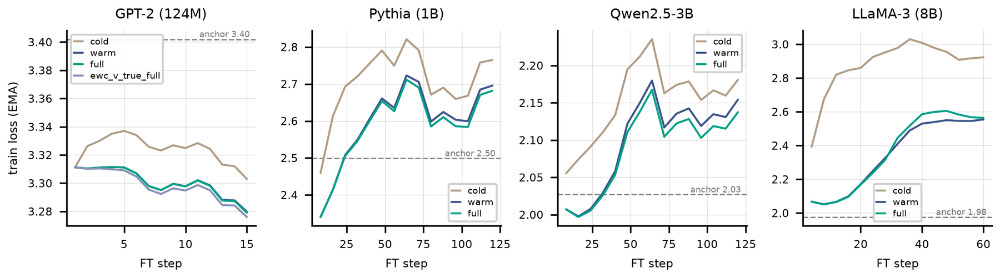
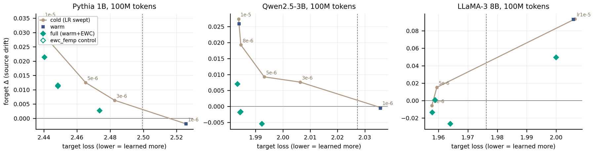
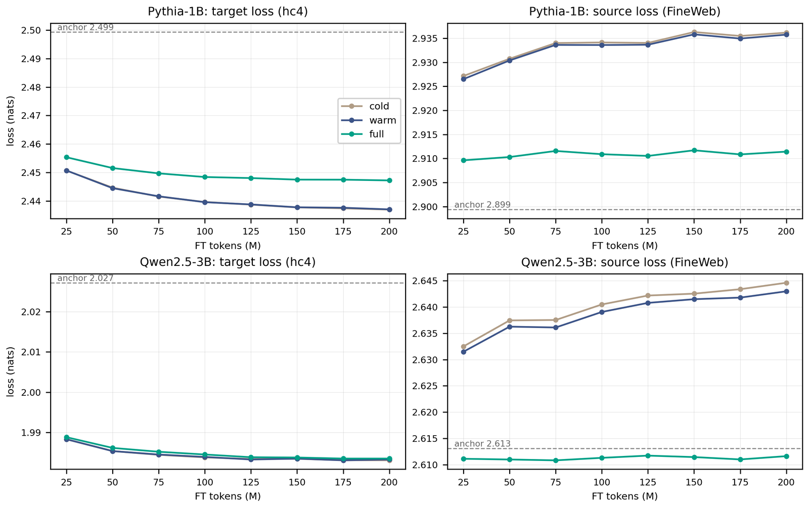
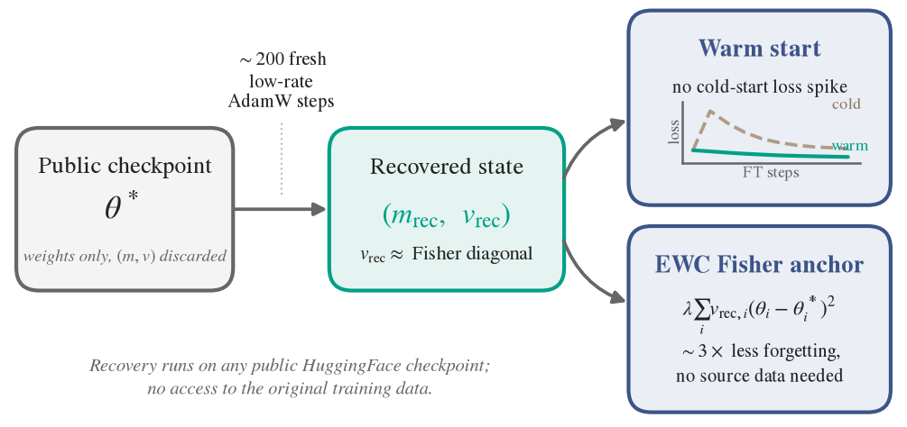

Stable Continual Pre-training from Weights-Only Checkpoints via Rebuilt Optimizer State
Rebuilding the AdamW state that public checkpoints leave out
Under review at Transactions on Machine Learning Research (TMLR) · research internship at ADIA Lab, April 2025 to June 2026
Public language models are released as weights. The AdamW optimizer that trained them also kept two running averages per weight, a first moment m and a second moment v, and releases leave both out. Continued pre-training on new data therefore starts AdamW from zero. Its first steps are full-sized in all directions, the training loss jumps, and the model forgets part of what it knew.
We show that about 200 AdamW steps on public text, at a learning rate too small to move the weights, rebuild the useful part of that state. Warm-starting from it removes the early jump. Using the rebuilt v as an elastic weight consolidation (EWC) anchor reduces forgetting. At 7B parameters, where the original buffers are public, the rebuilt estimate protects the model better than the original.
What a checkpoint leaves out
In bf16 a weight takes 2 bytes. AdamW keeps m and v in fp32, which adds 8 bytes per parameter. Shipping the optimizer state would make a download about five times larger. Releases drop it. Among the model families tested here, only OLMo-2 publishes its AdamW buffers.
Download size. Two bytes per weight and eight bytes per parameter for m and v, as in the manuscript; parameter counts are rounded.
Two jobs for the rebuilt state
With m = v = 0, the first bias-corrected AdamW step is −lr · sign(g): all parameters move by the full learning rate, whatever the curvature. For about 1/(1 − β2) steps after that, step sizes stay mis-scaled. A rebuilt state fixes the start. Its second moment also estimates how much the old task depends on a parameter, which is what an anchor against forgetting needs. The toy below shows the two jobs on a two-parameter model.
A toy with made-up numbers. All runs fine-tune with Adam and noisy gradients from the same checkpoint (ring). The rebuilt state comes from 200 tiny steps at the checkpoint on the old task's data. In the early jump, the checkpoint lies on the floor of a narrow valley of the new task, and the cold start's first step crosses it. In forgetting, the sand contours show the old task's loss. The anchor penalises moves in proportion to the rebuilt v, so the run learns along directions the old task barely notices.
How the state is rebuilt
The recovery needs only the released checkpoint and public text. It takes about 210 forward and backward passes in two short runs, and the weights barely move during either.
Recovery settings. The recovery run takes 200 steps at a learning rate of 10−7 with weight decay off. This count makes the bias correction 1 − β2200 close to 1 for β2 = 0.95. The run must use the model's own training-time β2, ε and weight decay; a wrong ε corrupts v without any error showing. The grids are a schematic.
Checking against the true state
Only two settings allow a check against the true optimizer state: a GPT-2 we trained from scratch with its buffers saved, and OLMo-2-7B, whose buffers are public. The test is functional. Both anchors protect the same fine-tuning run, and the measure is forgetting, the rise in loss on the old data.
Forgetting is post-fine-tuning minus pre-fine-tuning loss on the source data, in nats, with seed standard deviations where the manuscript reports them. The rebuilt v is 18 times larger than the true one at GPT-2 and 3 times smaller at OLMo-2, so a fair comparison first equalises the penalty strength. On GPT-2 the rebuilt v reaches a cosine similarity of 0.86 to 0.87 with the true buffer.
Results at four scales
Five fine-tuning conditions load different parts of the rebuilt state. They are cold (no rebuilt state), warm (m and v, no anchor), ewc (the anchor alone), v_only (v and the anchor) and full (warm start plus anchor). The anchor accounts for the forgetting result. The warm start matters most at the start of a run at a high learning rate.
Five conditions: the higher-rate stress test of the manuscript, at learning rate 10−4 on clinical text (HC4) for 5M tokens with λ = 106, three seeds, mean and standard deviation. Benchmarks is the mean accuracy change over eight lm-evaluation-harness tasks, in points; the suite is near chance at 124M. At this budget a cold start at a lower learning rate beats all of these runs. The grid is a stress test at a rate that is too high for the budget. Penalty strength: the anchor alone at strengths from 104 to 3 × 107; lower left is better, and the best strength grows with model size.
Is the per-parameter structure doing the work?
An anchor could help only because it pulls weights back toward the checkpoint with the right overall strength. Four controls keep the strength and destroy the per-parameter pattern of the rebuilt v. They use a uniform value, a random permutation across all parameters, a permutation within tensors, and tensor means. All five runs reach nearly the same target loss.
Pythia 1B, learning rate 10−5, 100M tokens, three seeds; target losses span 2.445 to 2.455. The rebuilt v forgets about 2.3 times less than the uniform anchor. The controls that keep per-tensor scale forget as much as the global ones, so the useful signal lies in individual parameters.
Figures from the manuscript




My part
I started the project on small models, first an MLP on MNIST and then a ResNet-18 on CIFAR-10. I built a pipeline for both SGD with momentum and AdamW. It saves a model's optimizer buffers during training and continues training from the saved weights alone with a fresh optimizer. It then compares the new buffers with the saved ones, layer by layer. The manuscript's GPT-2 experiment uses the same design at language-model scale: train with the optimizer state saved, rebuild it, and compare.
- TrainResNet-18 on CIFAR-10, logging loss and accuracy
- Savethe weights and the optimizer buffers
- Continuefrom the weights alone, with a fresh optimizer
- Comparenew and saved buffers, layer by layer
Limits and next steps
Recovery applies to AdamW only. From 1B to 8B parameters, forgetting is measured on FineWeb as a proxy for the original training data; GPT-2's held-out OpenWebText is the cleanest case. Fine-tuning budgets span 5M to 250M tokens, and the study covers four decoder-only model families. At 124M parameters the protection fades by 250M tokens.
The open question is why the fresh estimate protects better than OLMo-2's own buffer. Recovery on OLMo-2's public training mix could separate a stale buffer from the effects of the estimator.
Citation
R. Khan and S. Khan. Stable Continual Pre-training from Weights-Only Checkpoints via Rebuilt Optimizer State. Under review at Transactions on Machine Learning Research, 2026.